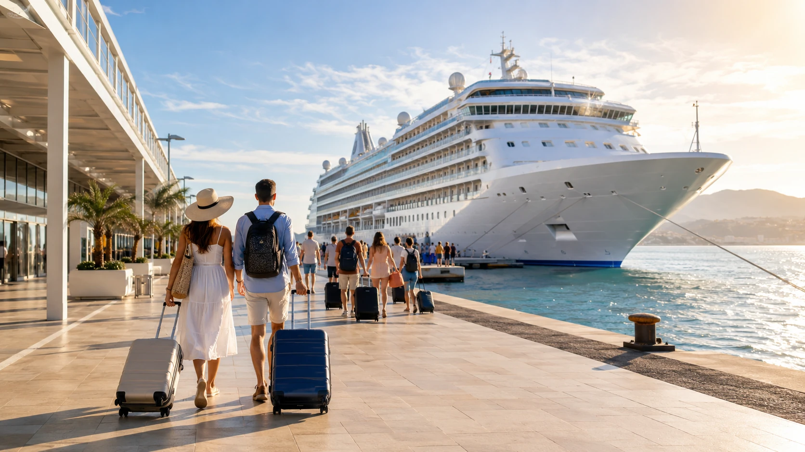

Plavba výletnou loďou už dávno nie je dovolenkou určenou iba pre bohatých cestovateľov. Aj zo Slovenska sa dá dostať k veľkým stredomorským prístavom autom, vlakom alebo lietadlom a počas jednej dovolenky navštíviť Taliansko, Chorvátsko, Grécko, Čiernu Horu, Francúzsko či Španielsko. Základná cena však nie je konečná. K plavbe treba pripočítať dopravu, servisné poplatky, nápoje, výlety a niekedy aj hotel pred nalodením.
Rýchla odpoveď: oplatí sa plavba Slovákom?
Áno, plavba po Stredomorí môže byť pre Slovákov veľmi zaujímavou dovolenkou. Nie je však vhodná pre každého.
Najväčšou výhodou je, že sa každé ráno môžete zobudiť pri inom meste alebo ostrove, ale batožinu vybalíte iba raz. Na lodi máte ubytovanie, stravu, bazény, večerný program a dopravu medzi jednotlivými destináciami.
Najpraktickejšie sú pre Slovákov plavby z prístavov na severe Talianska – najmä z Triestu, Benátok alebo Ravenny. Zo západného Slovenska sa tam dá dostať autom v rámci jedného dňa. Pri plavbách z Barcelony, Atén alebo Ríma je už rozumnejšie letieť a pricestovať minimálne deň pred vyplávaním.
Plavba je vhodná najmä pre ľudí, ktorí:
- chcú počas jednej dovolenky vidieť viac krajín,
- nechcú sa každých pár dní sťahovať do iného hotela,
- majú radi kombináciu poznávania, oddychu, jedla a zábavy,
- cestujú vo dvojici, s rodinou alebo väčšou skupinou,
- dokážu akceptovať, že v jednotlivých destináciách strávia iba niekoľko hodín.
Menej vhodná môže byť pre cestovateľov, ktorí chcú jednu krajinu spoznať do hĺbky, vyhľadávajú pokojné malé hotely alebo im prekážajú veľké skupiny ľudí.
Ako plavba po Stredomorí funguje
Najbežnejšia plavba trvá sedem nocí. Loď vypláva z jedného hlavného prístavu a po týždni sa doň väčšinou vráti. Existujú však aj jednosmerné plavby, pri ktorých sa nalodíte napríklad v Ravenne a vystúpite v Ríme.
Typický deň môže vyzerať takto:
- ráno loď pripláva do prístavu,
- cestujúci vystúpia a absolvujú výlet alebo individuálnu prehliadku,
- popoludní alebo večer sa vrátia na loď,
- loď v noci pokračuje do ďalšej destinácie.
Niektoré dni sa trávia celé na mori. Vtedy sú k dispozícii bazény, športoviská, divadlá, živá hudba, animácie, reštaurácie a ďalší program.
Oficiálne itineráre na rok 2026 ukazujú napríklad sedemdňové okruhy z Ravenny cez Dubrovník, Santorini, Atény a Split alebo z Barcelony cez Mallorku, Marseille, La Speziu, Civitavecchiu a Neapol.
Západné alebo východné Stredomorie?
Východné Stredomorie
Najčastejšie zahŕňa:
- severné Taliansko,
- Chorvátsko,
- Čiernu Horu,
- grécke ostrovy,
- Atény,
- turecké pobrežie,
- Maltu.
Pre Slovákov je praktické najmä vďaka odchodom z Triestu, Benátok a Ravenny. Je to dobrá voľba pre prvú plavbu, pretože doprava do prístavu môže byť jednoduchšia a trasy často kombinujú známe mestá, ostrovy a historické pamiatky.
Príkladom je plavba z Triestu cez Bari, Korfu a Syrakúzy alebo okruh z Ravenny cez Dubrovník, Santorini, Atény a Split.
Západné Stredomorie
Najčastejšie zahŕňa:
- Barcelonu,
- Mallorku,
- Marseille,
- Azúrové pobrežie,
- Janov,
- La Speziu,
- Rím,
- Neapol,
- Sicíliu.
Tieto plavby bývajú atraktívne pre ľudí, ktorí chcú vidieť veľké európske mestá a známe pamiatky. Nevýhodou je, že niektoré prístavy sú ďaleko od miest uvedených v názve plavby. „Rím“ znamená prístav Civitavecchia a „Florencia“ zvyčajne prístav La Spezia alebo Livorno.
Najpraktickejšie prístavy pre cestujúcich zo Slovenska
1. Trieste – najjednoduchší začiatok autom
Trieste patrí medzi najpraktickejšie prístavy pre cestujúcich zo Slovenska. Trasa autom vedie cez Rakúsko a Slovinsko. Treba počítať s diaľničnými známkami, prípadnými mýtnymi úsekmi, palivom a parkovaním počas plavby.
Hlavný terminál v Trieste sa nachádza priamo v centre mesta. Výhodou je blízkosť železničnej stanice, hotelov, reštaurácií a historického centra. Konkrétne miesto nalodenia však treba vždy overiť v lodných dokumentoch, pretože nie všetky lode používajú rovnaké mólo.
Odporúčanie: Pri cestovaní autom je rozumné prísť do Triestu večer pred plavbou, prespať a na nalodenie ísť bez stresu.
2. Benátky a Marghera – pozor na miesto registrácie
Pri plavbách označených ako „Venice“ môže loď v skutočnosti kotviť v priemyselnom prístave Marghera. Registrácia a odovzdanie batožiny však môžu prebiehať v osobnom termináli Venezia Terminal Passeggeri.
MSC upozorňuje cestujúcich, aby nešli automaticky priamo do Marghery, ale riadili sa pokynmi uvedenými v cestovných dokumentoch. Pri niektorých odchodoch zabezpečuje spoločnosť následný presun k lodi. Pri termináli Venezia Terminal Passeggeri sa nachádza aj oficiálne parkovisko pre cestujúcich.
3. Ravenna – obľúbená, ale terminál je mimo mesta
Mnohé plavby označené ako „Venice – Ravenna“ odchádzajú z terminálu Porto Corsini pri Ravenne.
Terminál sa nachádza približne 15 kilometrov od centra Ravenny. Z oblasti železničnej stanice premávajú objednávané transfery a miestna autobusová linka číslo 90. Letisko Bologna je vzdialené približne 90 kilometrov.
Ravenna je dobrým východiskom pre plavby smerujúce do Chorvátska, Čiernej Hory a Grécka. Pred rezerváciou letenky alebo vlaku si však treba overiť aj dopravu na posledných 15 kilometrov k terminálu.
4. Civitavecchia – prístav pre plavby z Ríma
Civitavecchia leží približne 70 kilometrov od centra Ríma. Najpraktickejšia cesta zo Slovenska je letecky do Ríma a následne vlakom alebo objednaným transferom.
Z letiska Fiumicino sa dá cestovať vlakom s prestupom. Cesta trvá orientačne približne dve hodiny.
Dôležitý tip: Neplánujte prílet do Ríma v rovnaký deň, ako loď vypláva. Meškanie letu, čakanie na batožinu alebo výpadok vlakov môže znamenať zmeškanie celej plavby.
Ideálne je priletieť deň vopred a prespať buď v Ríme, alebo priamo v Civitavecchii.
5. Barcelona
Barcelona je jedným z hlavných prístavov západného Stredomoria. Z letiska sa dá ísť taxíkom alebo verejnou dopravou s prestupom.
Terminály na móle Adossat spája s mestom prístavný autobus T3 Portbus. Podľa prístavu stojí lístok 3 eurá jednosmerne alebo 4,50 eura spiatočne.
Aj tu odporúčame priletieť minimálne deň pred plavbou. Barcelona je navyše vhodná na samostatný jednodňový alebo dvojdňový pobyt pred nalodením.
6. Pireus – prístav pre Atény
Pireus je hlavným prístavom Atén. S letiskom ho spája modrá linka metra číslo 3. Cesta medzi letiskom a Pireom trvá približne 55 až 60 minút, no od stanice môže byť potrebné pokračovať k príslušnému cruise terminálu autobusom alebo taxíkom.
Plavby z Atén sú dobré najmä pre cestovateľov, ktorí chcú navštíviť grécke ostrovy a Turecko.
7. Janov a Savona
Janov je dôležitým domovským prístavom MSC, Savona zase spoločnosti Costa Cruises. Janov má letisko aj železničnú stanicu v relatívnej blízkosti prístavu. Zo Slovenska však býva doprava menej jednoduchá ako do Triestu alebo Benátok.
Letisko Janov uvádza vlakové a autobusové spojenie do mesta, ako aj možnosť pokračovať vlakom do Savony, ktorá je vzdialená približne 45 kilometrov.
Koľko stojí plavba po Stredomorí v roku 2026?
Potvrdené príklady základných cien
Ceny sa menia podľa termínu, lode, obsadenosti a typu kajuty. Oficiálne ponuky v roku 2026 ukazujú veľmi široký rozsah:
- MSC propagovalo niektoré sedemnočné plavby po východnom Stredomorí od približne 349 eur na osobu.
- Costa uvádzala plavby v roku 2026 od približne 549 eur na osobu, pričom last-minute osemdňové ponuky začínali približne od 679 eur.
- Norwegian Cruise Line uvádzala vybrané sedemdňové plavby približne od 809 do 1 019 amerických dolárov na osobu.
- Royal Caribbean uvádzala vybrané sedemnočné stredomorské plavby približne od 1 167 do 1 633 amerických dolárov na osobu.
Ide väčšinou o cenu na osobu pri obsadení kajuty dvoma cestujúcimi. Konečná suma môže byť vyššia podľa trhu, termínu, meny, dostupnosti a zvolených doplnkov.
Orientačný reálny rozpočet na jednu osobu
Nasledujúce sumy sú modelový odhad, nie konkrétna cenová ponuka.
Úsporná plavba: približne 800 až 1 350 eur na osobu
- vnútorná kajuta,
- termín mimo hlavnej sezóny,
- doprava autom rozdelená medzi viac ľudí,
- základná strava,
- minimum platených nápojov,
- výlety prevažne na vlastnú päsť.
Pohodlná plavba: približne 1 300 až 2 200 eur na osobu
- kajuta s oknom alebo balkónom,
- jedna noc v hoteli pred plavbou,
- nápojový balík alebo pravidelná konzumácia v baroch,
- dva až tri organizované výlety,
- cestovné poistenie a primeraná finančná rezerva.
Vyšší komfort: približne 2 200 až 3 500 eur a viac na osobu
- balkónová kajuta alebo suita,
- prémiovejšia lodná spoločnosť,
- nápojový a internetový balík,
- špecializované reštaurácie,
- organizované výlety v každom prístave,
- letecká doprava a súkromné transfery.
Čo býva zahrnuté v základnej cene?
Pri veľkých lodných spoločnostiach býva zvyčajne zahrnuté:
- ubytovanie vo vybranej kajute,
- raňajky, obed a večera v bufete alebo hlavnej reštaurácii,
- základné občerstvenie počas dňa,
- väčšina večerných predstavení,
- živá hudba a bežný animačný program,
- používanie základných bazénov a spoločných priestorov,
- detské kluby pri vybraných spoločnostiach,
- fitness centrum bez platených lekcií.
MSC uvádza ako štandard plnú penziu, program, živú hudbu a používanie fitness zariadení.
Čo väčšinou nie je zahrnuté?
Najčastejšie sa dopláca za:
- servisné poplatky alebo prepitné,
- alkoholické a mnohé nealkoholické nápoje,
- fľaškovú vodu,
- špeciálnu kávu,
- internet,
- organizované výlety,
- špecializované reštaurácie,
- wellness a masáže,
- kasíno,
- fotografie,
- niektoré atrakcie na novších lodiach,
- dopravu do prístavu,
- parkovanie,
- hotel pred alebo po plavbe,
- cestovné poistenie.
Pri MSC je v bufete zahrnutá voda, bežná káva, čaj, mlieko a vybrané džúsy. Nápoje v hlavnej obsluhovanej reštaurácii sa bez nápojového balíka spravidla platia. Royal Caribbean zahŕňa napríklad vodu, bežnú kávu, čaj, limonádu, mlieko a niektoré džúsy.
Servisné poplatky: položka, na ktorú sa často zabúda
Servisný poplatok sa účtuje za obsluhu kajuty, reštaurácií a ďalšie služby posádky.
Pri nových rezerváciách MSC od 2. júla 2026 je na európskych plavbách uvedený poplatok:
- dospelý: približne 12 eur za noc,
- dieťa od 2 do 17 rokov: približne 10 eur za noc,
- dieťa do dvoch rokov: bez poplatku.
Pri sedemnočnej plavbe tak môže dospelý zaplatiť ďalších 84 eur.
Costa pri konkrétnych ponukách uvádza približne 11 až 12 eur za dospelého a noc, podľa lode a plavby.
Royal Caribbean uvádza približne 18 dolárov za osobu a deň v bežnej kajute a 20,50 dolára v suite. Pri nápojoch a špecializovanom stravovaní sa môže automaticky pripočítať ďalších 18 percent.
Praktické pravidlo: Pred rezerváciou si vždy skontrolujte, či je servisný poplatok už zahrnutý v konečnej cene alebo sa bude účtovať denne na palubný účet.
Nové poplatky pri gréckych prístavoch
Grécko zaviedlo poplatok pre cestujúcich z výletných lodí, ktorí vystúpia v gréckom prístave. V hlavnej sezóne dosahuje pri Santorini a Mykonose až 20 eur na osobu, pri ostatných gréckych prístavoch približne 5 eur. Mimo vrcholu sezóny sú sadzby nižšie.
Poplatok sa vzťahuje aj na cestujúcich, ktorí absolvujú organizovaný výlet, a podľa MSC platí bez ohľadu na vek cestujúceho.
Pri trase s viacerými gréckymi zastávkami preto môže pribudnúť niekoľko desiatok eur na osobu.
Akú kajutu si vybrať?
Vnútorná kajuta
Najlacnejšia možnosť bez okna.
Výhody:
- najnižšia cena,
- úplná tma pri spánku,
- vhodná pre cestujúcich, ktorí trávia v kajute minimum času.
Nevýhody:
- žiadne denné svetlo,
- menší pocit priestoru,
- niekomu môže chýbať kontakt s vonkajším prostredím.
Kajuta s oknom
Ponúka denné svetlo, ale okno sa väčšinou nedá otvoriť. Treba si overiť, či výhľadu neprekáža záchranný čln alebo iná konštrukcia.
Balkónová kajuta
Pre prvú plavbu je to najpríjemnejšia možnosť, ak to rozpočet dovolí.
Balkón oceníte pri rannom priplávaní do prístavu, pri plavbe okolo ostrovov alebo pri večernom odchode. Je vhodný aj pre ľudí, ktorí chcú viac súkromia a čerstvý vzduch.
Suita
Ponúka viac priestoru a pri niektorých spoločnostiach aj prioritné nalodenie, samostatné reštaurácie, nápoje či služby komorníka. Cena však môže byť násobne vyššia.
Ako prebieha nalodenie?

Pred plavbou cestujúci zvyčajne absolvuje online registráciu v aplikácii alebo na stránke lodnej spoločnosti. Následne dostane:
- palubný lístok,
- pridelený čas príchodu,
- označenia na veľkú batožinu,
- informácie o termináli,
- bezpečnostné a cestovné pokyny.
Veľkú batožinu odovzdáte pri termináli a posádka ju neskôr doručí pred kajutu. V príručnej batožine preto majte:
- cestovné doklady,
- lieky,
- platobnú kartu,
- elektroniku a cennosti,
- plavky a veci potrebné počas prvých hodín,
- základnú hygienu.
MSC výslovne odporúča ponechať v príručnej batožine pas, peniaze, elektroniku, lieky a ďalšie potrebné alebo cenné predmety.
Po nalodení sa absolvuje povinné bezpečnostné oboznámenie. Na lodi sa väčšinou neplatí hotovosťou, ale palubnou kartou alebo náramkom prepojeným s platobnou kartou či finančným depozitom.
Organizované výlety alebo vlastný program?
Lodný výlet
Výlet si kúpite priamo cez lodnú spoločnosť.
Výhody:
- jednoduchá organizácia,
- doprava čaká pri lodi,
- program je prispôsobený času kotvenia,
- pri problémoch má lodná spoločnosť informácie o skupine.
Nevýhody:
- vyššia cena,
- väčšie skupiny,
- pevný program,
- menej času na samostatné objavovanie.
Výlet na vlastnú päsť
V mnohých prístavoch sa dá centrum navštíviť pešo, autobusom, vlakom alebo miestnym taxíkom.
Výhody:
- nižšie náklady,
- vlastné tempo,
- možnosť vyhnúť sa najväčším skupinám.
Nevýhody:
- všetko si organizujete sami,
- nesiete riziko dopravného meškania,
- musíte presne sledovať čas návratu.
Najdôležitejším údajom nie je čas odchodu lode, ale čas označený ako all aboard – čas, keď už majú byť všetci cestujúci späť na palube.
Na vzdialené ciele, ako sú Rím z Civitavecchie alebo Florencia z La Spezie, je potrebná výrazne väčšia časová rezerva než pri prístavoch, kde loď stojí priamo pri centre.
Cestovné doklady pre občana Slovenska
Požadované doklady závisia od celej trasy, nielen od prístavu nalodenia.
Pri niektorých trasách v rámci EÚ a Schengenu môže postačovať občiansky preukaz použiteľný na cestovanie. Ak však plavba navštívi Turecko, Tunisko, Čiernu Horu, Gibraltar alebo inú krajinu mimo bežnej trasy EÚ, podmienky sa môžu zmeniť.
Lodné spoločnosti upozorňujú, že za správnosť dokladov, víz a ich platnosť zodpovedá cestujúci. Royal Caribbean pri medzinárodných plavbách všeobecne požaduje pas s platnosťou minimálne šesť mesiacov po skončení plavby. MSC zverejňuje samostatné dokumentové požiadavky podľa konkrétneho itinerára.
Najbezpečnejšie odporúčanie pre Slováka: Cestovať s platným cestovným pasom, ktorého platnosť presahuje návrat minimálne o šesť mesiacov, aj keď by pri niektorých európskych trasách mohol postačovať občiansky preukaz.
Meno na rezervácii musí byť totožné s menom v doklade.
Cestovné poistenie
Európsky preukaz zdravotného poistenia je užitočný pri nevyhnutnom ošetrení vo verejnom zdravotnom systéme krajín EÚ. Nie je však náhradou komerčného cestovného poistenia.
Nekryje napríklad:
- súkromnú zdravotnú starostlivosť,
- návrat alebo prevoz na Slovensko,
- stratenú batožinu,
- zrušenie dovolenky,
- zmeškanie odchodu lode.
Európska komisia výslovne upozorňuje, že EHIC nenahrádza cestovné poistenie a nekryje repatriáciu ani súkromnú zdravotnú starostlivosť.
Poistenie by malo zahŕňať:
- dostatočne vysoké liečebné náklady,
- ošetrenie na palube,
- prevoz z lode,
- repatriáciu,
- storno plavby,
- zmeškanie nalodenia alebo nadväzujúcej dopravy,
- prerušenie cesty,
- batožinu a zodpovednosť za škodu.
Lekárske ošetrenie na palube býva platené a môže byť drahé.
Čo ak mi bude na lodi zle?
Veľké moderné lode majú stabilizátory, ale pohyb mora sa nedá úplne vylúčiť. Citlivejší cestujúci by si mali vybrať kajutu približne v strednej časti lode a nie príliš vysoko.
Pomôcť môže:
- sledovanie horizontu,
- pobyt na čerstvom vzduchu,
- dostatok spánku,
- ľahšia strava,
- obmedzenie alkoholu,
- nečítať a nesledovať dlho telefón počas výrazného pohybu.
CDC upozorňuje, že nedostatok spánku, alkohol a nikotín môžu cestovnú nevoľnosť zhoršiť. Účinnosť zázvoru a rôznych doplnkov nie je podľa CDC jednoznačne preukázaná.
Vhodné lieky je lepšie vopred konzultovať s lekárom alebo lekárnikom, najmä pri chronických ochoreniach, tehotenstve alebo užívaní ďalších liekov.
Internet a mobil na mori
Internet na lodi väčšinou nie je zahrnutý v základnej cene. Lodné Wi-Fi balíky môžu byť drahé a ich kvalita závisí od lode, pokrytia a zvoleného balíka.
Pri mobilnom telefóne treba byť veľmi opatrný. Na otvorenom mori sa telefón môže pripojiť k lodnej satelitnej mobilnej sieti. Takéto hovory a dáta nemusia patriť do európskeho roamingu a účet môže výrazne narásť.
Praktický postup:
1. Po odchode z prístavu zapnúť režim lietadlo. 2. Následne zapnúť iba Wi-Fi, ak používate lodný internet. 3. Mobilné dáta zapnúť až v prístave po kontrole názvu operátora. 4. Pred plavbou si stiahnuť offline mapy jednotlivých miest.
Oblečenie na plavbu
Počas dňa stačí bežné dovolenkové oblečenie. Večer sa pravidlá líšia podľa spoločnosti a konkrétnej reštaurácie.
Odporúča sa zbaliť:
- pohodlné topánky na výlety,
- plavky a ľahké oblečenie,
- sveter alebo ľahkú bundu na veternú palubu,
- dlhé nohavice a košeľu pre muža,
- jednoduché elegantnejšie oblečenie pre ženu,
- obuv vhodnú do hlavnej reštaurácie,
- ochranu pred slnkom.
Na bežných lodiach MSC alebo Costa nie je potrebné nosiť smoking ani večernú róbu. Niektoré večery však môžu mať elegantnú, bielu alebo tematickú atmosféru.
Najväčšie výhody plavby
Každý deň iné miesto
Za sedem dní sa dá navštíviť niekoľko krajín bez presúvania batožiny a menenia hotelov.
Predvídateľné základné náklady
Ubytovanie, väčšina jedla a veľká časť programu sú zahrnuté v cene.
Program pre rôzne generácie
Na jednej lodi môžu cestovať deti, rodičia aj starí rodičia a každý si vyberie vlastný program.
Jednoduché večery
Po návrate z výletu nemusíte hľadať reštauráciu ani program. Loď ponúka večeru, divadlo, hudbu aj bary.
Možnosť ochutnať viac destinácií
Plavba môže ukázať, na ktoré miesto sa oplatí neskôr vrátiť na samostatnú dovolenku.
Najväčšie nevýhody
V destinácii máte málo času
Počas jednej zastávky často uvidíte iba hlavné pamiatky. Atmosféru večerného mesta alebo pokojné miesta mimo centra väčšinou nezažijete.
Základná cena môže zavádzať
Lacná kajuta môže vyzerať výhodne, ale po pripočítaní dopravy, hotela, servisných poplatkov, nápojov a výletov sa konečný rozpočet výrazne zvýši.
Veľké množstvo ľudí
Moderné lode môžu prepravovať niekoľko tisíc cestujúcich. Pri raňajkách, výstupe z lode, výťahoch alebo bazénoch môžu vznikať rady.
Prístav nemusí byť pri uvádzanom meste
Rím, Florencia alebo Benátky môžu byť od terminálu desiatky kilometrov.
Environmentálne a spoločenské otázky
Výletné lode sú kritizované pre emisie, zaťažovanie prístavov a veľký počet jednodňových návštevníkov. Barcelona sa rozhodla do roku 2030 znížiť počet cruise terminálov zo siedmich na päť a obmedziť maximálnu kapacitu. Grécko zaviedlo poplatky pre cestujúcich z lodí v najvyťaženejších destináciách.
Zodpovedný cestujúci môže podporiť miestne podniky, rešpektovať obyvateľov, obmedziť odpad a nevyužívať destináciu iba ako kulisu na rýchle fotografie.
Akú plavbu by sme odporučili Slovákovi na prvý raz?
Za najpraktickejšiu prvú skúsenosť považujeme:
- sedem nocí,
- okružnú plavbu s návratom do rovnakého prístavu,
- odchod z Triestu, Benátok alebo Ravenny,
- termín v máji, júni, septembri alebo októbri,
- trasu cez Chorvátsko, Čiernu Horu a Grécko,
- maximálne dva celé dni na mori,
- vnútornú kajutu pri obmedzenom rozpočte alebo balkónovú pri väčšom komforte.
Júl a august prinášajú najvyššie teploty, väčšie davy a často aj vyššie ceny. Jar a začiatok jesene bývajú vhodnejšie na prehliadku miest, hoci počasie a stav mora sa nedajú zaručiť.
Vzorový rozpočet pre dvojicu zo Slovenska
Sedem nocí z Triestu, vnútorná kajuta, termín mimo hlavnej sezóny
Orientačný model pre dve osoby:
- plavba: 1 100 až 1 500 eur,
- servisné poplatky: približne 168 eur,
- doprava autom, známky a palivo: približne 180 až 300 eur,
- parkovanie: približne 100 až 180 eur,
- hotel pred plavbou: približne 100 až 160 eur,
- poistenie: približne 40 až 100 eur,
- nápoje a osobné výdavky: približne 150 až 400 eur,
- výlety: približne 100 až 500 eur.
Celkovo: približne 1 940 až 3 300 eur za dve osoby
Rozdiel závisí najmä od ceny samotnej plavby, nápojov a počtu organizovaných výletov.
Kontrolný zoznam pred rezerváciou
Pred zaplatením si overte:
1. Presný prístav a terminál nalodenia. 2. Či sa loď vracia do rovnakého prístavu. 3. Čo je zahrnuté v cene. 4. Výšku servisných poplatkov. 5. Či cena zahŕňa prístavné dane. 6. Podmienky nápojového balíka. 7. Polohu a kategóriu kajuty. 8. Prípadný obmedzený výhľad. 9. Počet dní na mori. 10. Časy príchodov a odchodov z prístavov. 11. Požadované cestovné doklady pre všetky krajiny. 12. Podmienky zrušenia alebo zmeny rezervácie. 13. Poistenie storna a zmeškania nalodenia. 14. Dopravu a parkovanie v prístave. 15. Hotel pred plavbou pri ceste lietadlom alebo dlhej jazde autom.
Čo ak je plavba zrušená alebo výrazne mešká?
Na plavby odchádzajúce z prístavov EÚ sa za určitých podmienok vzťahujú európske práva cestujúcich v námornej doprave. Pravidlá sa týkajú aj dovolenkových plavieb s ubytovaním a viac ako dvoma nocami na palube.
Podľa okolností môžu zahŕňať informovanie cestujúcich, občerstvenie, ubytovanie, presmerovanie alebo finančnú kompenzáciu. Nevzťahujú sa však automaticky na každú zmenu itinerára spôsobenú počasím alebo bezpečnostnou situáciou.
Podmienky konkrétnej lodnej spoločnosti a cestovné poistenie sú preto rovnako dôležité ako všeobecné európske pravidlá.
Záverečné hodnotenie Letom po Stredomorí
Plavba výletnou loďou po Stredomorí je pre Slovákov dostupnejšia, než sa môže na prvý pohľad zdať. Najmä odchody z Triestu, Benátok a Ravenny umožňujú absolvovať dovolenku bez komplikovaných leteckých prestupov.
Nie je to však automaticky lacná dovolenka. Základná cena kajuty je iba začiatok. Reálny rozpočet musí zahŕňať dopravu, servisné poplatky, poistenie, nápoje, výlety a prípadný hotel pred nalodením.
Najväčšou hodnotou plavby nie je luxus, ale možnosť pohodlne navštíviť viac miest bez neustáleho balenia a presúvania.
Pre človeka, ktorý chce počas jedného týždňa ochutnať Chorvátsko, Grécko, Taliansko či Čiernu Horu, môže byť plavba výbornou skúsenosťou. Pre cestovateľa, ktorý chce spoznať jeden ostrov, jeho pláže, dediny a večernú atmosféru, bude klasická pobytová alebo poznávacia dovolenka pravdepodobne lepšou voľbou.
Verdikt: Plavba po Stredomorí je pre Slovákov dobrý a reálne dostupný spôsob cestovania – ak poznajú konečné náklady, správne si vyberú prístav a neočakávajú, že počas niekoľkohodinovej zastávky spoznajú celú destináciu.
*Informácie a ceny boli kontrolované v júli 2026. Ponuky, poplatky, itineráre a podmienky vstupu do krajín sa môžu meniť. Pred rezerváciou je potrebné overiť konečnú cenu a pravidlá konkrétnej plavby.*